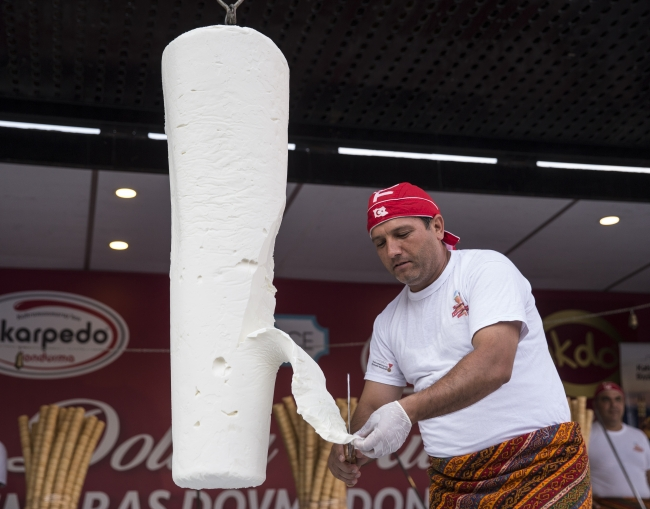
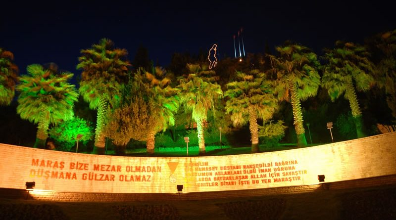
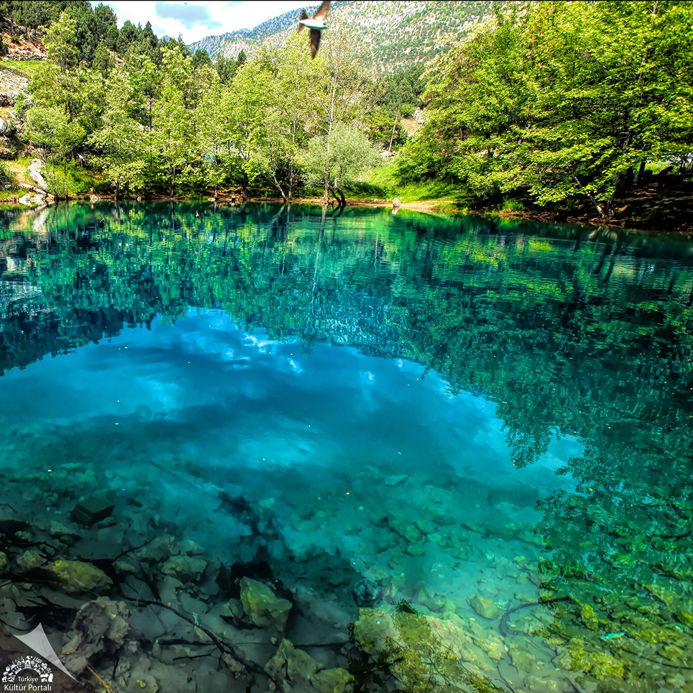
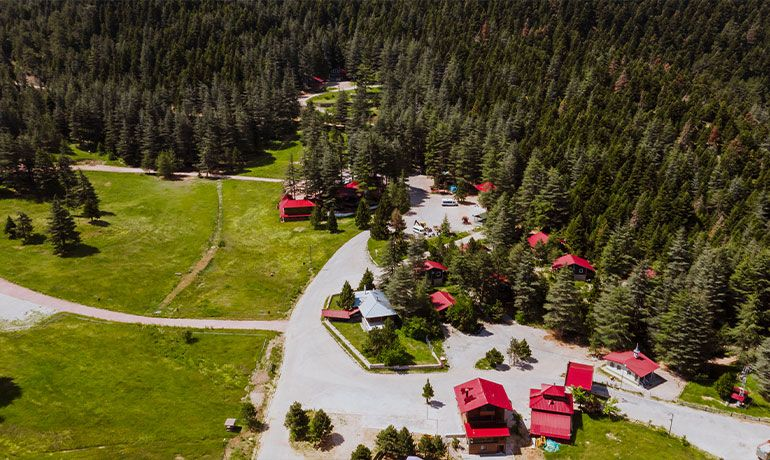
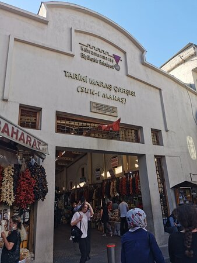

Kahramanmaraş dondurması, Türkiye’nin en meşhur dondurmasıdır. Diğer dondurmalardan en büyük farkı, süt, şeker ve özellikle salep ile yapılmasıdır. İçerdiği doğal salep sayesinde oldukça yoğun kıvamlı, elastik yapılı ve geç eriyen bir dondurmadır. Maraş dondurması, bıçakla kesilebilecek kadar serttir ve bu özelliğiyle tanınır. Dondurmanın yapımında kullanılan süt genellikle keçi sütüdür, bu da ona kendine özgü bir tat kazandırır.
Dondurmacılar, Maraş dondurmasını uzatıp esneterek ve tahta çubuklarla döverek sunarlar. Bu geleneksel sunum, hem turistlerin ilgisini çeker hem de dondurmanın kalitesini gösterir.
Kahramanmaraş şehir merkezinde yer alan Maraş Kalesi, kentin en önemli tarihi simgelerinden biridir. Şehre hâkim bir tepe üzerinde konumlanan kale, hem görkemli duruşuyla hem de geçmişe uzanan köklü tarihiyle dikkat çeker. Kalenin yapım tarihi kesin olarak bilinmemekle birlikte, arkeolojik ve tarihi bulgular, bu yapının kökeninin M.Ö. 1. yüzyıla kadar uzandığını göstermektedir. Zaman içinde Hititler, Asurlular, Romalılar, Bizanslılar, Selçuklular ve Osmanlılar gibi pek çok medeniyetin eline geçen kale, her dönemde stratejik bir savunma noktası olarak kullanılmıştır.
Maraş Kalesi, dikdörtgene yakın bir plana sahiptir ve surlarla çevrilidir. Duvarları kesme taşlarla inşa edilmiştir. İç yapısında çeşitli odalar ve kalıntılar bulunur. Özellikle Roma ve Bizans dönemlerinde kale büyük onarımlar görmüş, Selçuklu ve Osmanlı dönemlerinde ise savunma amacından çok şehrin sembolü olarak varlığını sürdürmüştür. Yapı zamanla yıpransa da, son yıllarda yapılan restorasyon çalışmalarıyla ziyaretçilere açılmış ve şehrin kültürel mirasına kazandırılmıştır.
Günümüzde Maraş Kalesi, yalnızca bir tarihî yapı değil, aynı zamanda halkın vakit geçirebildiği bir yaşam alanıdır. Kaleye çıkan ziyaretçiler, hem şehrin panoramik manzarasını seyredebilir hem de tarihle iç içe bir gezinti yapabilir. Kale çevresi düzenlenmiş yürüyüş yolları, yeşil alanlar ve dinlenme noktalarıyla hem halkın hem de turistlerin uğrak noktalarından biri haline gelmiştir. Maraş’a gelen herkesin mutlaka görmesi gereken bu kale, geçmişin izlerini bugüne taşıyan önemli bir yapıdır.
Kahramanmaraş’ın doğal güzelliklerinden biri olan Yeşilgöz Mesire Alanı, şehir merkezine yaklaşık 60 kilometre uzaklıktaki Tekir Mahallesi sınırları içinde yer alır. Adını, berrak ve masmavi suyundan alan Yeşilgöz, hem doğaseverlerin hem de şehirden uzaklaşmak isteyenlerin sıkça tercih ettiği bir yerdir. Bölge, adeta bir kartpostal görüntüsü sunan göleti, çevresini saran çam ormanları ve serin havasıyla ziyaretçilerine huzurlu bir ortam sağlar. Yeşilgöz’ü özel kılan en önemli unsur, içerisinden çıkan suyun kaynak suyu olması ve bu suyun göz kamaştırıcı bir berraklığa sahip olmasıdır. Gölün ortasında beliren mavi-yeşil tonlar, doğanın sunduğu eşsiz bir renk şöleni gibidir.
Su altı dalgıçları tarafından yapılan araştırmalarda gölün tabanının çok derin olduğu, hatta tam derinliğinin hâlâ net olarak ölçülemediği belirtilmiştir. Bu özelliğiyle Yeşilgöz, hem görsel bir şölen sunar hem de doğal bir gizem taşır.
Ziyaretçiler burada piknik yapabilir, doğa yürüyüşleri gerçekleştirebilir veya sadece gölet kenarında dinlenerek doğanın tadını çıkarabilirler. Bölgede oturma alanları, yürüyüş yolları ve çocuklar için oyun alanları da bulunmaktadır. Yaz aylarında serin havasıyla ferahlatıcı bir kaçış noktası olan Yeşilgöz, özellikle hafta sonlarında yoğun ilgi görmektedir. Kahramanmaraş’a yolu düşen herkesin mutlaka görmesi gereken bu doğal güzellik, şehrin sadece tarihiyle değil, doğasıyla da ne kadar zengin olduğunu bir kez daha gözler önüne seriyor.
Kahramanmaraş’ın Onikişubat ilçesinde yer alan Başkonuş Yaylası, şehir merkezine yaklaşık 55 kilometre uzaklıktadır ve 1350 metre rakımıyla doğayla baş başa kalmak isteyenler için eşsiz bir ortam sunar. Zengin bitki örtüsü, temiz havası ve sakin atmosferiyle bölge, hem günübirlik ziyaretçiler hem de kampçılar tarafından ilgiyle ziyaret edilir.
Yayla çevresi; köknar, sedir, çam, meşe ve ardıç gibi ağaçlarla kaplı geniş ormanlarla çevrilidir. İlkbahar ve yaz aylarında rengârenk çiçekler, endemik bitki türleri ve kuş sesleri eşliğinde yürüyüş yapma imkânı sunan bu doğal alan, kış aylarında ise karla kaplı manzarasıyla bambaşka bir güzellik kazanır.
Başkonuş Yaylası’nda doğa yürüyüşü parkurları, spor alanları, çocuk oyun alanları ve piknik yapılabilecek alanlar bulunur. Ayrıca bungalov tarzı konaklama seçenekleri, çadır ve karavan kamp alanları sayesinde uzun süreli konaklamalar için de uygundur. Yayla içerisinde kır lokantaları da yer almakta, böylece doğayla iç içe keyifli vakit geçirirken yöresel lezzetlerin tadına bakmak da mümkündür.
Kahramanmaraş Kapalı Çarşısı, şehrin en eski ve en canlı ticaret noktalarından biridir. Şehir merkezinde yer alan bu çarşı, hem tarihi mimarisiyle hem de içindeki geleneksel el sanatlarıyla dikkat çeker. Yapımı 16. yüzyılın sonlarına dayanan çarşı, Osmanlı döneminin erken kapalı çarşı örneklerinden biridir. Kuzey-güney doğrultusunda uzanan yapı, ortasında bulunan dua kubbesiyle mimari açıdan da oldukça ilgi çekicidir.
Kapalı Çarşı’da 100’den fazla dükkân yer alır. Bu dükkânlarda geleneksel Maraş el işçiliğine dair birçok ürün bulunabilir. Bakırcılık, sim sırma işlemeciliği, ahşap oymacılığı, keçecilik, saraçlık, bıçakçılık ve kuyumculuk gibi sanatlar hâlâ ustaları tarafından yaşatılmaktadır. Çarşının çevresinde bulunan Saraçhane, Bakırcılar, Semerciler, Demirciler ve Alacacılar gibi diğer tarihi çarşılarla birlikte geniş bir esnaf ağı oluşturur.
Günümüzde Kapalı Çarşı, hem alışveriş yapmak isteyenler hem de Kahramanmaraş’ın kültürel dokusunu yakından tanımak isteyen ziyaretçiler için önemli bir duraktır. İçeride dolaşırken geçmişin izlerini taşıyan atmosferi hissetmek mümkündür. Çarşıda yöresel ürünler, baharatlar, el yapımı hediyelikler ve geleneksel gıda ürünleri de bulunabilir. Ziyaretçiler burada hem alışveriş yapabilir hem de şehrin tarihini ve kültürünü yakından hissedebilir.
